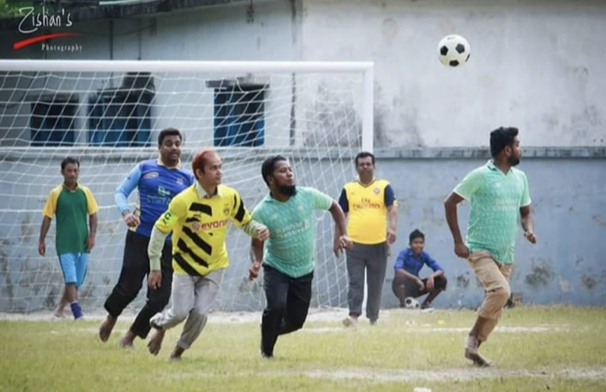

.png)

Football is one of the most popular and exciting sports activities at Nurul Amin College and University. The institution always encourages students to participate in different co-curricular activities along with academic studies. In this memorable moment, our respected Principal Sir and other honourable teachers are watching the football match with great interest and enthusiasm. Their presence on the playground inspires the students and creates a positive and energetic environment for everyone. The teachers' support demonstrates the institution's commitment to the overall development of students. By attending the match, they motivate the players to perform with confidence, discipline, and sportsmanship. Such moments strengthen the relationship between teachers and students and make campus life more enjoyable and meaningful. Football activities at Nurul Amin College and University are not merely competitions; they are opportunities to build teamwork, leadership qualities, mutual respect, and physical fitness. The encouragement and guidance of our respected teachers make these sporting events more memorable and inspire students to strive for excellence both on and off the field.
The students of Nurul Amin College and University actively participate in football activities and proudly represent their institution through sports. In this group photograph, a team of enthusiastic university students is seen wearing their football jerseys with confidence and unity. Their smiling faces reflect friendship, dedication, and the spirit of teamwork that define the sporting culture of the institution. Football is not only a game for these students but also a platform to develop discipline, leadership, cooperation, and perseverance. Wearing the university jersey symbolizes pride, responsibility, and the honour of representing their educational institution. Through regular participation in football matches and sporting events, students learn valuable life lessons that contribute to their personal and social development. Nurul Amin College and University believes that physical activities are essential for maintaining a healthy body and a healthy mind. Therefore, the institution continuously encourages students to engage in sports and extracurricular activities. This football team represents the enthusiasm, unity, and determination of the university community and serves as an inspiration for future generations of students.
The students of Nurul Amin College and University actively participate in football activities and proudly represent their institution through sports. In this group photograph, a team of enthusiastic university students is seen wearing their football jerseys with confidence and unity. Their smiling faces reflect friendship, dedication, and the spirit of teamwork that define the sporting culture of the institution. Football is not only a game for these students but also a platform to develop discipline, leadership, cooperation, and perseverance. Wearing the university jersey symbolizes pride, responsibility, and the honour of representing their educational institution. Through regular participation in football matches and sporting events, students learn valuable life lessons that contribute to their personal and social development. Nurul Amin College and University believes that physical activities are essential for maintaining a healthy body and a healthy mind. Therefore, the institution continuously encourages students to engage in sports and extracurricular activities. This football team represents the enthusiasm, unity, and determination of the university community and serves as an inspiration for future generations of students.